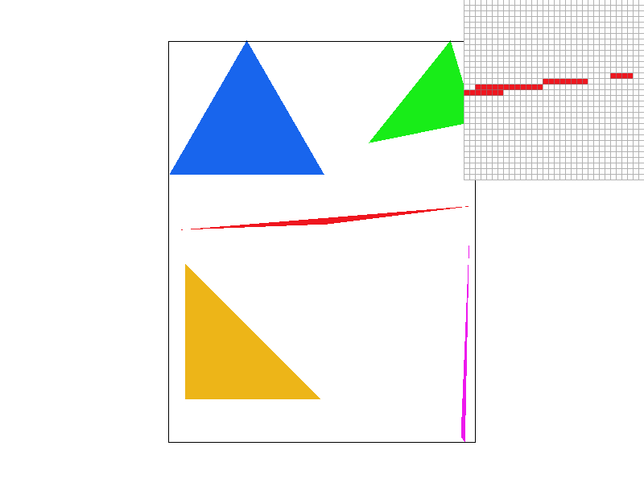
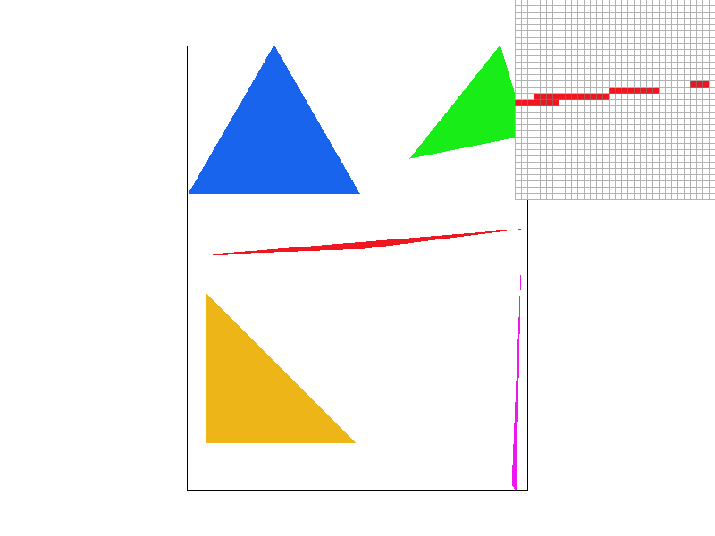
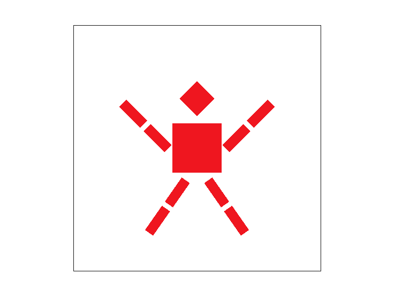
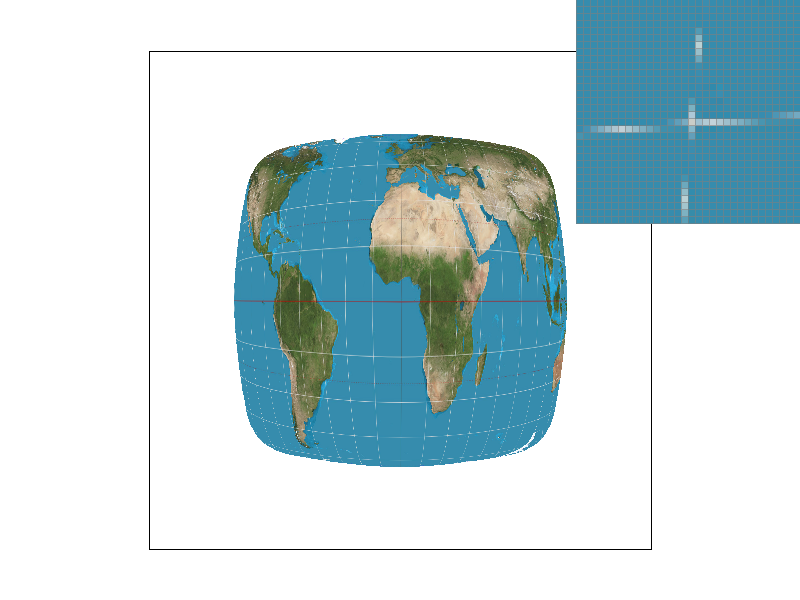
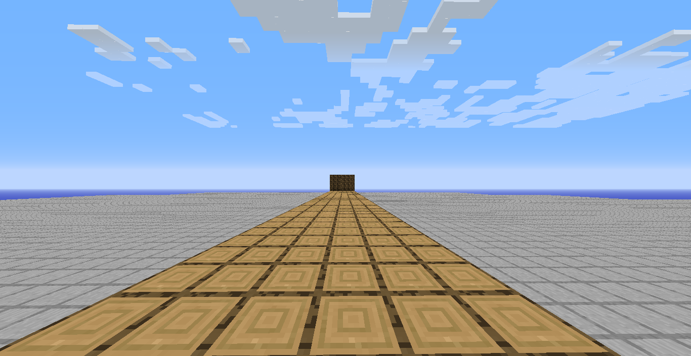
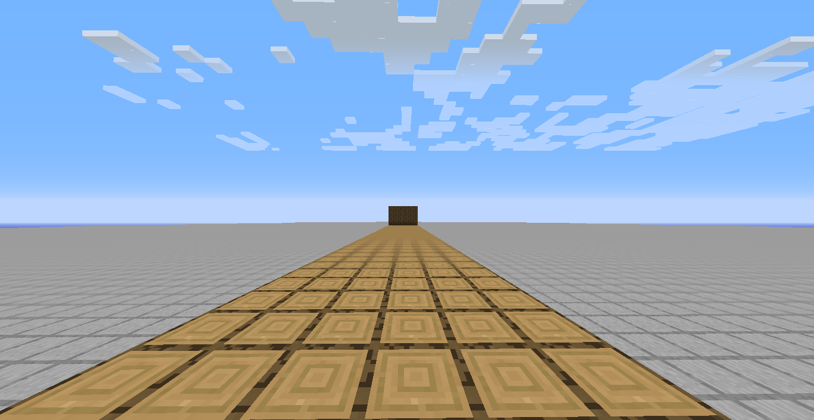
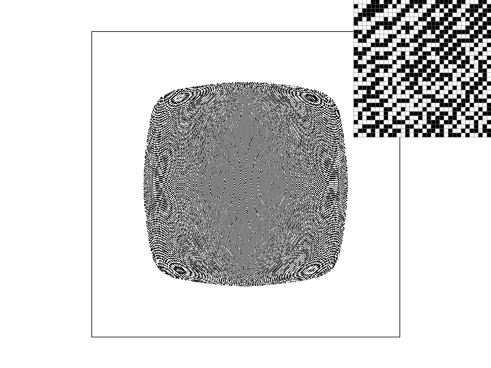
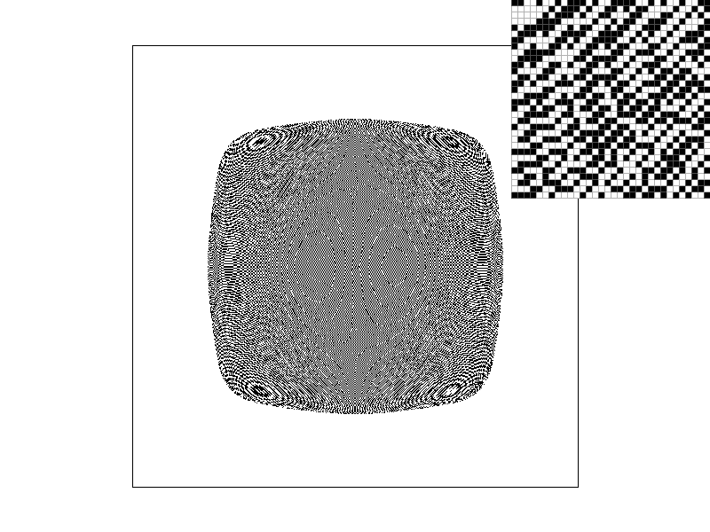
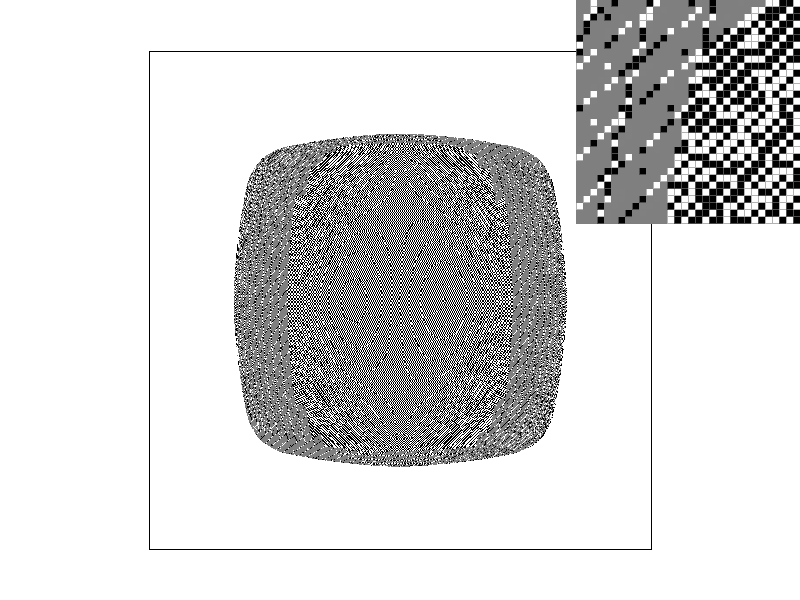
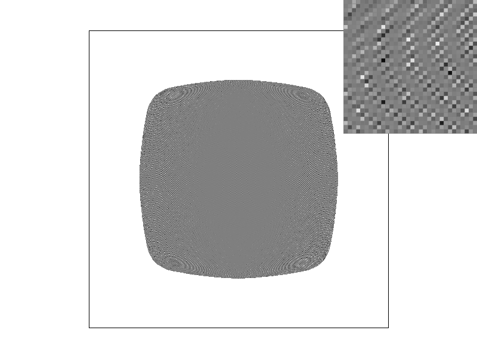

Overview
Give a high-level overview of what you implemented in this project. Think about what you've built as a whole. Share your thoughts on what interesting things you've learned from completing the project.
Section I: Rasterization
Part 1: Rasterizing single-color triangles
To rasterize our triangles in part one, we first calculate the bounding box of the triangle using the min and max of the provided triangle's x and y coordinates, thus giving us the dimensions we will sample in. For our implementation, we created a Triangle class which has the bounding-box method, and our InTriangle() method. For every pixel in the bounding box, we call our InTriangle method (using the middle of the pixel location, so + 0.5 on the x and y coordinates), where we calculate the line equations using the formula given in class and we calculate the orientation of the triangle (clockwise or counterclockwise) which later determines if we check for positive values or negative as the result of the line equations. If the values line up, we color in our pixel! Our method is no worse than one that checks each sample of the bounding box triangle because we do this match exactly. We calculate the bounding box for each triangle and only sample within that box. However, one important but small optimization we made was to additionally limit the bounding box to the viewport. If we zoom in far enough, one singular triangle (or several) will take up the viewport entirely. If we only limit to the bounding box of this triangle, we are uneccessarily sampling many pixels. We saw a great improvement in performance (specifically when zoomed in) with this optimization.
Part 2: Antialiasing triangles
Our algorithm for supersampling comes from the idea of rasterizing the image in a higher resolution, essentially. We do this by multiplying the dimensions of the sample_buffer by the sampling rate so it can hold the information of our new higher-resolution image. As we did in part 1, we get the bounding box of the triangle but these coordinates don’t line up with the higher resolution image so we needed to multiply our original x and y coordinates by the square root of the sample rate. Now, we can go through each point in our higher-resolution image, but there isn’t a higher-resolution image so we divide all coordinates we check from our bounding box by the square root of the sample rate to get the float coordinates of our higher-resolution image. To get to the center of our higher resolution image in the space of our actual image we must add the float coordinates with ((1 / square root of the sample rate) / 2). We then can check if this point is in the triangle of our original image. We modified the fill_pixel method to include a boolean that tells us if we are filling in a triangle. If so, we can simply fill the pixel with the given color and make sure to multiply the y by the square root of the sample size, and if it isn’t a triangle we fill in all of our higher-resolution images with the same color so they aren’t supersampled. Finally, we resolve our sample_buffer to the frame buffer by averaging the colors of our higher-resolution image to the single pixel in our original image. In summary, we rasterize the higher-resolution image, check if the point in our higher-resolution image lies on our triangle, if so we put the color there into our sample_buffer which we then downsize by averaging the colors of our higher-resolution image. Supersampling is useful because it allows us to rasterize our image at a much higher resolution and then downsample it, therefore reducing aliasing. By averaging the colors of our supersampled image we can now reduce jaggies as pixels are now longer just the color they are at the center of the pixel by the average color of multiple points in that pixel.
|
|

|
|

|
|
Aliasing like the type shown above occurs because we sample in the middle of the pixel, although it would occur regardless of where we sampled. At a certain point where there are high rates of change (so the edges of the triangle), we don't have any pixels to visually express that detail. As such, a triangle might exist within a pixel, but because of our sampling location, we will barely miss it. This can cause parts of the triangle to get cut off and cause "jaggies". Supersampling alleviates this to some extent, because we sample the image in far more detailed. The above super sampled images look much better, but aliasing is still very clear at this low resolution.
Part 3: Transforms
Implementing transforms was rather simple as we just used the CGL library to implement several of the matrices discussed throughout class so far. One important tidbit was to make sure we did our math in radians, not degrees! Otherwise, cubeman came out looking a little wonky. For this part of the project, we attempted to make it look like cube man was doing jumping jacks! We think it came out quite well, and wonder if we could write some code to animate this. We don't think it would be too difficult and might take a stab at it later!

|

|
Section II: Sampling
Part 4: Barycentric coordinates
We like to think of barycentric coordinates like this: Triangles have 3 points (obviously!), and we can represent these three points of the triangle as alpha, beta, and gamma. By using these points as "weights", we can express any point within the triangle as a combination of these weights. Want it closer to one corner of the triangle? You need to increase that corners weight (decreasing the others as well, they all must add up to 1!). In my eyes, this makes intuitive sense and can provide a clear understanding of where a point in the triangle is. For example, if any of the two (alpha, beta, and gamma) are 0, this means that the selected point is actually on one of the corners of the triangle, as it is being fully "weighed" by that corner alone! Similarly, if one of them is zero, that means that the selected point is on the edge of the triangle, somewhere along the line that connects the two points "weighing" it! This system for triangle coordinates becomes extremely useful, not only as a method of efficiently doing triangle math, but also to do interpolation. Since we already have the concepts of alpha, betta, and gamma as "weights" we can use this to do color interpolation, for example. In the image below each corner has its own color, and using the calculated weights at any point within the triangle, we can compute a color for that point!
Now we can use many triangles to create a beautifully colored circle!
Part 5: "Pixel sampling" for texture mapping
In the previous portions of the project, the triangle either had a constant color, or colors at a point that
we could represent mathematically. This meant that every single point on the triangle had a determined color
that we could compute without any ambiguity. However, when apply textures to the triangle (which have
pixels- and are therefore not infinitely detailed), we now run into issues. As sample points are unlikely to
be perfectly aligned with the pixels on the texture, how do we handle this issue? How do we sample for the
pixel or color at this point on the triangle? There are several solutions to this problem. In this task we
implement two, nearest neighbor sampling and bilinear sampling.
Nearest neighbor is the simplest pixel sampling method. When we sample the texture, unsurprisingly, our
sample location is unlikely to be perfectly aligned with a pixel. For the case of nearest neighbor sampling,
we remedy this issue by just choosing the nearest pixel to that sample point, and using the color
information from that pixel. This works ok, and is simple, but because there is no color blending done of
any kind, it can cause a pixelated look.
A more advanced form of pixel sampling would be bilinear sampling, where we blend the colors of the 4 pixels
closest to the sample point. Importantly, we do a weighted interpolation of these colors, based on the
relative
position of the sample point in relation to these pixels. This makes a bunch of sense! If a sample point is
close to the edge of a pixel (very close to the other pixels in the texture), it doesn't really make sense
to attribute the color of that pixel soley to the sample. The following image from the slides provides a
good visual:
|
|

|
|
|

|
The bilinear images look slightly more blurred on the whole, but the quality of the latitude and longitude lines is much better, as is overall color blending.
Bilinear will make a large difference when there are small details in the image that might be entirely missed by nearest neighbor sampling, like parts of the latitude and longitude lines in the image above. However, it also slightly blurs the lines (and the image on the whole) and in this sense, can reduce really small sharp detail. While this is fine for photographs, this might not be as desirable for computed created imagery or designs where small and sharp details are key, or things like maps, for example. Similarly, bilinear doesn't work well at all for things like pixel art, where keeping sharp edges is absolutely neccessary, and blending isn't a part of the style at all. Here, nearest neighbor is the perfect way to scale pixel art. However, on the whole, bilinear tends to allow for smoother, nicer images, and reduces a pixelated look, especially when scaling the image.
Part 6: "Level sampling" with mipmaps for texture mapping
In our goal to chase down aliasing, we have another tool at our disposal, mipmaps. We know that aliasing is caused by the presence of high-frequency signals that can't be presented properly. This can create weird images in our rasterization during our sampling. What if we could somehow filter these high frequency samples (in a high quality manner) before rasterization, therefore reducing aliasing? Thats the key idea behind mipmaps. In this instance, the presence of high resolution textures far away from the camera causes aliasing as these high frequency signals aren't properly represented. To deal with this, we create downsampled versions of the textures (which would avoid the aliasing, and be indistinguishable from the high resolution textures at further distances) and we use increasingly downsampled textures as the texture gets further away. In this sense, this is "level-sampling" as we sample different "levels" (downsamples) of the mipmap depending on the textures distance. We calculate the necessary mipmap level throughout the rasterization, and proceed with several different implementations. For L_ZERO, we just use the highest resolution texture everywhere (AKA no mipmapping). For L_NEAREST, we snap to the nearest mipmap level and sample that texture. Finally, for L_LINEAR, we do a linear interpolation between the samples of the two mipmap levels that are closest to the calculated "ideal" level (somewhat similiar to bilinear interpolation between pixels).
|

|

|
Ofcourse, there are various tradeoffs with all these different sampling techniques and antialiasing methods. Supersampling, especially in this project where it isn't limited to just the edges of triangles, is prohibitively expensive, as it is exactly several (scaling with sampling rate) times the regular computation needed. However, it does make edges look much better. While it should help with color blending as well, we personally found that it doesn't seem to do as good of a job as bilinear filtering, which is computationally cheaper. Further, supersampling presents not only a computational expense, but also (depending on implementation) a potentially large increase in memory usage. The reccomended implementation for this project requires a massive increase in memory usage! Similarly, mipmaps require larger memory usage, but due to the fact that the textures are downsampled, they actually only take up 1/3 more memory! A worth it trade, especially since mipmaps aren't quite computationally expensive (they are rather expensive if you use linear level sampling, which requires 2x the sampling, but the L_NEAREST shouldn't be too much more expensive other than the mipmap math itself). Overall, all of these have the ability to be powerful antialiasing tools, and while they certainly have overlap in the problems they can solve, it seems they are each best suited to a certain task. For example, look at the comparison of bilinear interpolation to 16x supersampling in the map images above! The bilinear interpolation is cheaper and produces much nicer latitude and longitude lines.
|

|
Look at this pixel grid image! There is some awful aliasing here, what can we do to fix it?? Maybe supersampling the image will help. |
|

|
Nope! Supersampling does us no good here, and won't really make any difference when combined with anything else! How about some bilinear filtering? |
|
|
Well, now the image just looks like a gray mess! We are supposed to have sharp pixels, but the bilinear filtering has merged the colors too much. What might a mipmap do? |
|

|
Well, nearest-level mipmapping doesn't do us much good, clearly the downsampled images give us a gray blur as well! It's interesting to see where the mipmap levels are though. |
|
|
Well, linear mipmapping doesn't look any better for our grid, but atleast that harsh boundry is gone! Its a nice gradient now. |
|

|
Wow! Mixing the linear mipmap and bilinear filtering give us the most grayed out blob yet! I guess this image is a lost cause! |